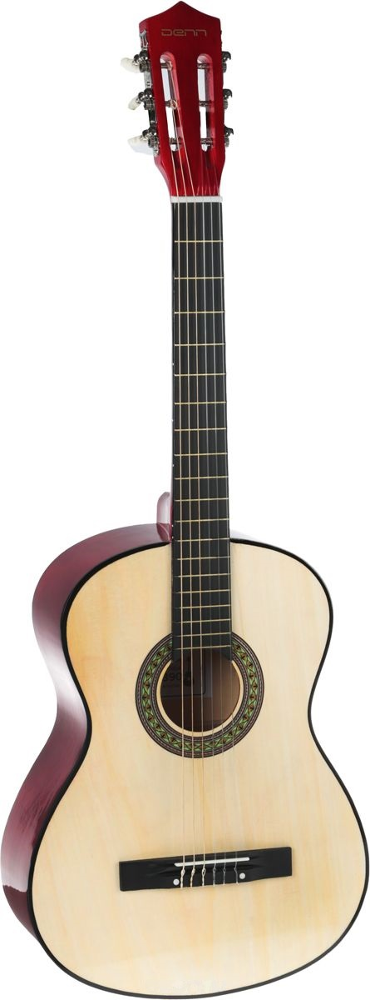
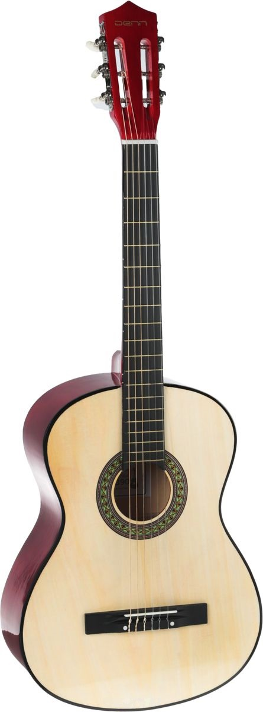

Классическая гитара
 

Классическая (испанская, шестистру́нная) гита́ра — струнный щипковый музыкальный инструмент. Основной представитель семейства гитар в целом, и акустических гитар в частности. В современном виде существует со второй половины XVIII века, используется как сольный, ансамблевый и аккомпанирующий инструмент. Гитара обладает большими художественно-исполнительскими возможностями и широким разнообразием тембров. Является одним из самых популярных музыкальных инструментов в мире.
Ссылки на источники
- Википедия, URL:https://ru.wikipedia.org/wiki/%D0%9A%D0%BB%D0%B0%D1%81%D1%81%D0%B8%D1%87%D0%B5%D1%81%D0%BA%D0%B0%D1%8F_%D0%B3%D0%B8%D1%82%D0%B0%D1%80%D0%B0 (Режим доступа: свободный, дата обращения: 15.02.2023)
- Иванов, И. И. Гитара для начинающих. Пошаговый иллюстрированный самоучитель / И. И. Иванов. — 1-е изд. — Москва : Издательство АСТ, 2022. — 200 c. — Текст : непосредственный.